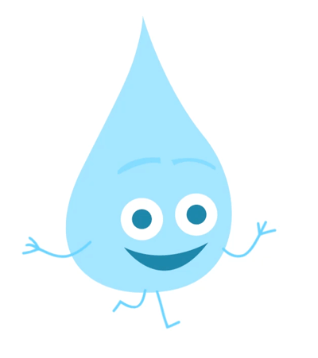

Population

31+ Million
Consumption
per capita
270 Liter/Day
Access To Save Drinking Water
97%
Fresh Water
3.5%
Salt Water
96.5%
Fresh Water in Saudi Household
Population
31+ Million
Consumption
per capita
270 Liter/Day
Access To Save Drinking Water
97%
Source: KAPSARC Data Portal
The ONLY natural potable water source in the Kingdom is "Groundwater".
.. Therefore ..

The Kingdom leads the world in the production and consumption of desalinated water, and with an estimated 91 Billion SR of expansion plans in the pipeline until 2020.
Source: Saudi Arabia expands its desalination capacity
.. So ..
Saudi Arabia rely on it's desalinated water as a "main source" for Fresh Water,
This fiqure shows the amount of desalinated water in KSA through 2010-2016.
an increase in desalinated water until it reach 1947 (million m3/yr).
Source: KAPSARC Data Portal
This fiqure shows the amount of Groundwater Vs. Total Fresh Water in KSA through 2010-2016.
Data From Percentage of Extracted or Produced Water to Total Freshwater by Source(Groundwater Vs. Freshwater)

Surprisingly, The amount of both was Decreased in 2015-2016.
Source: KAPSARC Data Portal
As a Result
The Total Number of Houses, Which are Occupied by Saudi Households in The Kingdom, Hit 3+ Million Houses.
Therefore, They Tend To Use These as a Source of Drinking Water
Botteled Water

50.6 %
Public piped

22.9%
Water Truck

17.7%
Source: KAPSARC Data Portal
Which Lead To
Environment Pollution
A plastic bottel will last for more than 450 years if left on a beach.
Over 100,000 marine mammals and 1 million seabirds die every year from ingestion or entanglement in plastic litter.
ACHIEVING ENVIRONMENTAL SUSTAINABILITY
"We will seek to safeguard our environment by increasing the efficiency of waste management, establishing comprehensive recycling projects, reducing all types of pollution and fighting desertification. We will also promote the optimal use of our water resources by reducing consumption and utilizing treated and renewable water".
WE MUST ACT NOW !!

Use Energy Efficient machines

Save Water in the Kitchen and Laundry

Use the filter instead of the water bottles

Find and repair leaks

Take a quick shower

Water your garden with a watering can

Reduce, Reuse, Recycle

Turn off the tap when you brush your teeth

Keep drinking water
"WATER IS THE DRIVING FORCE FOR ALL NATURE, SO WATER IS LIFE, DON'T WASTE IT !"
